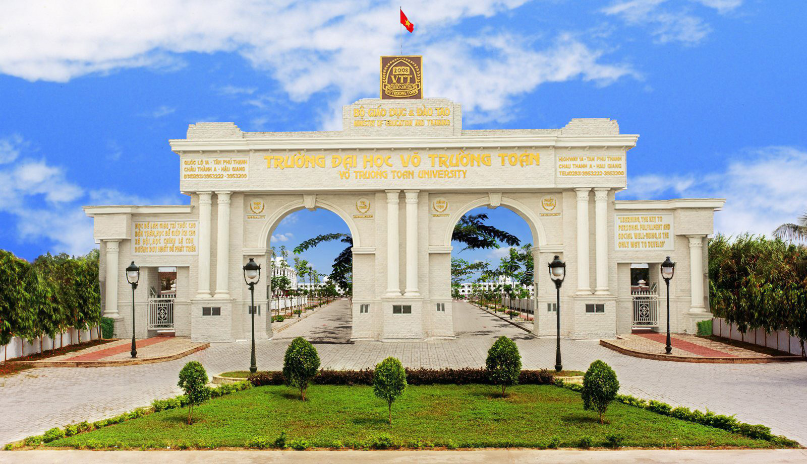
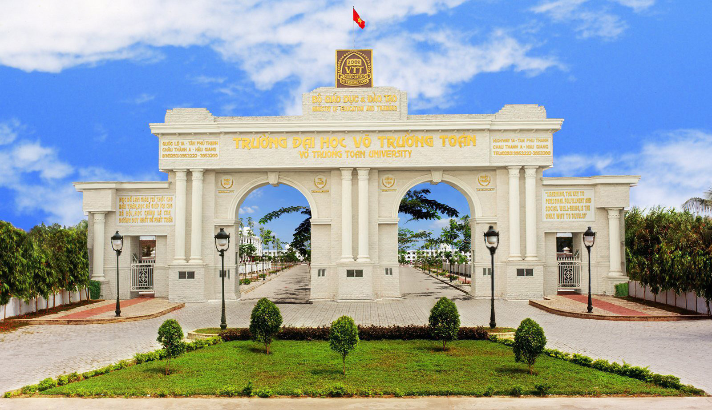

Văn hóa/Lịch sử
Ẩm thực: Những món ăn truyền thống và đặc sản của tỉnh Hậu Giang không chỉ ngon mà còn thể hiện phần nào bản sắc văn hóa ẩm thực của dân tộc miền Tây Nam Bộ: Lươn xào xả ớt, Cá lóc kho tiêu, Lẩu mắm, Bún nước lèo, Bánh kèn,…
Công trình, kiến trúc: Nổi tiếng với những cánh đồng lúa xanh mướt và những con kênh rạch vươn dài. Dưới đây là một số công trình kiến trúc nổi bật ở Hậu Giang: Cầu Đại Nguyễn Văn Linh, Cầu Xã Nàng Trong, Thiền Viện Trúc Lâm.
Văn hóa Có những nét đặc trưng riêng, phản ánh cuộc sống của người dân nơi đây. Các phong tục, tập quán, nghệ thuật dân gian và lễ hội truyền thống được duy trì và phát triển trong cộng đồng, góp phần tạo nên sự đa dạng và phong phú của văn hóa Hậu Giang. Ngoài ra, văn hóa ẩm thực cũng đóng vai trò quan trọng trong văn hóa của tỉnh Hậu Giang. Đặc sản của vùng đất này như cá lóc, tôm châu, bún bánh mì Hậu Giang, chả rươi… đã trở thành đặc sản nổi tiếng và được nhiều người biết đến. Văn hóa tỉnh Hậu Giang không chỉ là sự kết hợp hài hòa giữa nền văn hóa truyền thống và văn hóa hiện đại, mà còn là điểm đến thu hút du khách bởi sự đa dạng và phong phú của văn hóa dân tộc.

 
